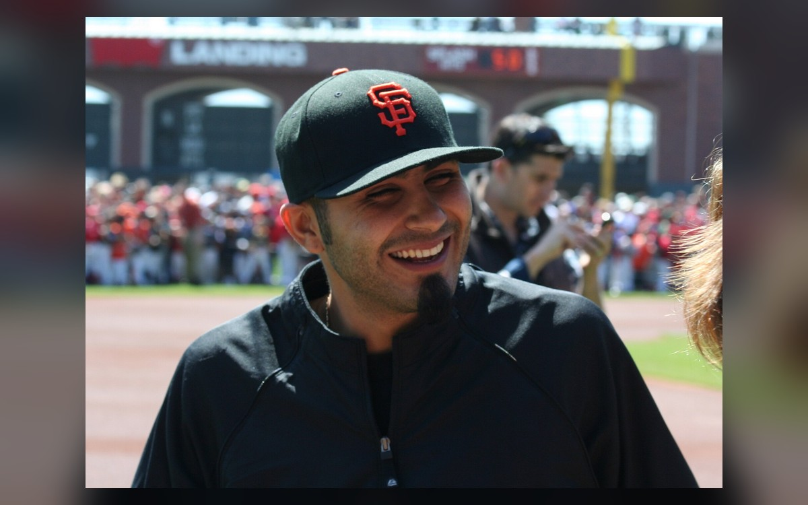
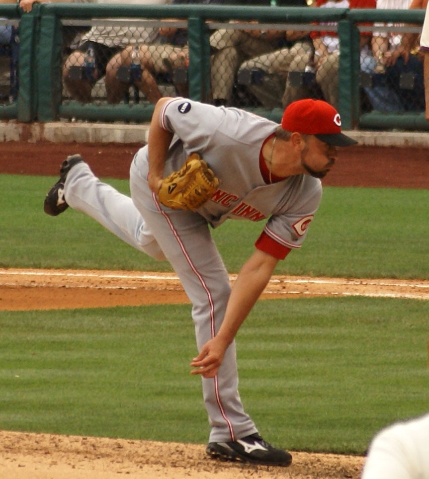

Bochy's October Wizardry and the Core Four Bullpen That Won Three Titles
Bruce Bochy managed the late innings like a chess grandmaster, and he had the perfect pieces. Javier Lopez, Santiago Casilla, Sergio Romo, and Jeremy Affeldt turned every October lead into a locked vault.

There is a certain kind of manager who wins in October not with a lineup card but with a bullpen phone. Bruce Bochy was the best of them. Watch the tape of those three Giants championship runs and the games all seem to hinge on the same thing: a tight lead in the seventh or eighth inning, a dangerous hitter walking to the plate, and Bochy standing on the top step already knowing exactly which arm he was about to bring in. He was almost never wrong. That is not luck. That is a craft, and nobody in his era practiced it better.
The chess grandmaster in the dugout
Bochy's genius was matchups. He treated the last three innings of a playoff game like a series of individual duels, and he was willing to burn through his bullpen one hitter at a time to win each one. Bring in the lefty to face the lefty. Go get the slider guy for the righty who chases. Trust the power arm when he needed a strikeout and the crafty veteran when he needed a ground ball. Other managers talked about playing the percentages. Bochy actually did it, inning after inning, with the calm of a man who had already seen the whole game play out in his head.
It only works, of course, if the arms in the bullpen can execute. And this is where the story turns from a manager into a group of relievers who became legends together. They called themselves the Core Four, and across the 2010, 2012, and 2014 postseasons they combined for a 1.14 ERA over 78 and two-thirds innings, going 7-1 with eight saves. No relief quartet in franchise history was ever more dependable when the lights were brightest.


Javier Lopez, the left-handed scalpel
Every great bullpen needs a specialist who erases the other team's best left-handed hitter, and Lopez was the finest of his generation at exactly that. He threw from a low sidearm slot that made the ball look like it was coming out of the third-base dugout, and left-handed sluggers simply could not touch him. Bochy used him like a scalpel, often for a single crucial batter, and it was almost always the right cut. When the Giants needed one big out against a dangerous lefty in October, the phone rang for Javy Lopez.
Santiago Casilla, the power arm
Casilla was the pure heat of the group, a hard-throwing right-hander who spent stretches of all three title runs handling the closer's role. He did not always make it look easy, but he kept coming after hitters with a live fastball, and Bochy trusted him in the biggest spots. In a bullpen full of finesse and funk, Casilla was the guy who could simply blow the ball past you when the moment demanded it.
Sergio Romo, the slider and the swagger
Then there is Romo, who might be the most beloved of the bunch. He did not throw hard. He did not need to. He had one of the nastiest sliders the game has seen and the nerve to throw it anywhere, anytime. The signature moment of the entire dynasty might belong to him: closing out the 2012 World Series by freezing Miguel Cabrera, the Triple Crown winner, with a fastball right down the middle when the entire ballpark expected the slider. That is guts. That is a closer who trusted himself completely, and Bochy trusted him right back.


Jeremy Affeldt, the glue
Affeldt was the versatile one, the reliever who could face lefties and righties with equal comfort and give Bochy exactly what the moment required. His postseason work was quietly spectacular, a long stretch of scoreless, high-leverage innings that never got the headlines the closers did but won just as many games. Every championship bullpen has a man who does the unglamorous work in the middle innings and keeps the deficit at zero until the offense wakes up. For the Giants, that was Jeremy Affeldt, and he was superb at it.
Four arms, one legacy
What makes the Core Four so remarkable is not just how good they were but how long they stayed good together. Each of the four topped 35 appearances for four straight seasons, a run of durability that MLB research found no bullpen had matched since at least 1980. In an era when relievers come and go every winter, the Giants kept the same four men and let Bochy conduct them like an orchestra. The Giants eventually honored all four on the franchise Wall of Fame, together, which is exactly how they should be remembered.
Bochy is in the Hall of Fame now, a four-time champion and one of the great October minds the sport has produced. But he would be the first to tell you that a manager's bullpen decisions are only as good as the arms answering the phone. He made the calls. Lopez, Casilla, Romo, and Affeldt made them look like magic. Three parades down Market Street say it worked.
Core Four in October- 2010Lockdown relief carries the first San Francisco title
- 2012Romo freezes Miguel Cabrera to finish a World Series sweep
- 2014The bullpen bridges to Bumgarner for a third crown
- LegacyAll four honored together on the Giants Wall of Fame
“He made the calls. Lopez, Casilla, Romo, and Affeldt made them look like magic.”
Bay Area Sports Blog- 1.14 combined ERA across the 2010, 2012, and 2014 postseasons
- 78 and two-thirds playoff innings, 70 strikeouts, 18 walks
- Eight saves and a 7-1 record in 98 October appearances
- Four straight seasons of 35-plus appearances for each man
More: The Giants dynasty · Bumgarner's 2014 masterpiece · Giants section